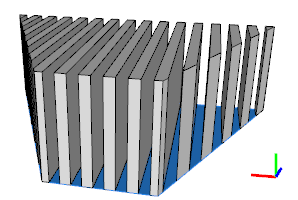
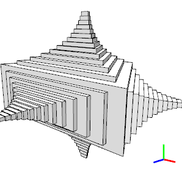

NIL operation
Syntax
NIL
Description
The NIL operation deletes the current shape from the shape tree. It can be used e.g. to create holes in split operations or to terminate recursive rules.
Related
Examples
Using NIL to create Holes
 |
Lot-->
extrude(10)
split(x){ { ~1 : X | ~1 : NIL }* | ~1 : X } }
|
Using NIL to stop a Recursion
 |
attr ErkerFact = 0.8
attr ErkerDepth = 0.8
attr ErkerStop = 2
Lot-->
extrude(10)
X
comp(f) { all : Erker }
Erker-->
case(scope.sx > ErkerStop) :
s('ErkerFact, 'ErkerFact, 0)
center(xy)
alignScopeToGeometry(yUp, 0)
extrude(ErkerDepth)
X
comp(f){top : Erker}
else:
NIL
|
Copyright ©2008-2021 Esri R&D Center Zurich. All rights reserved.